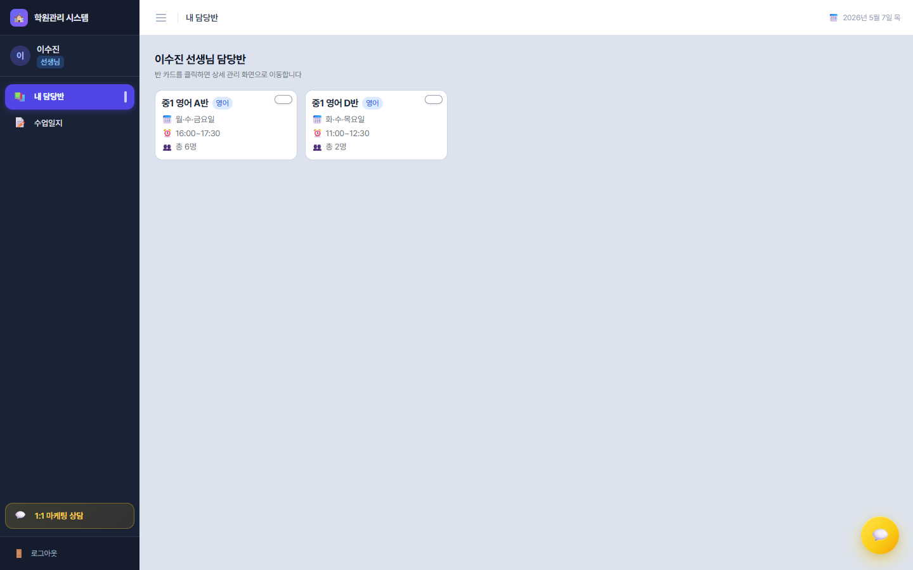
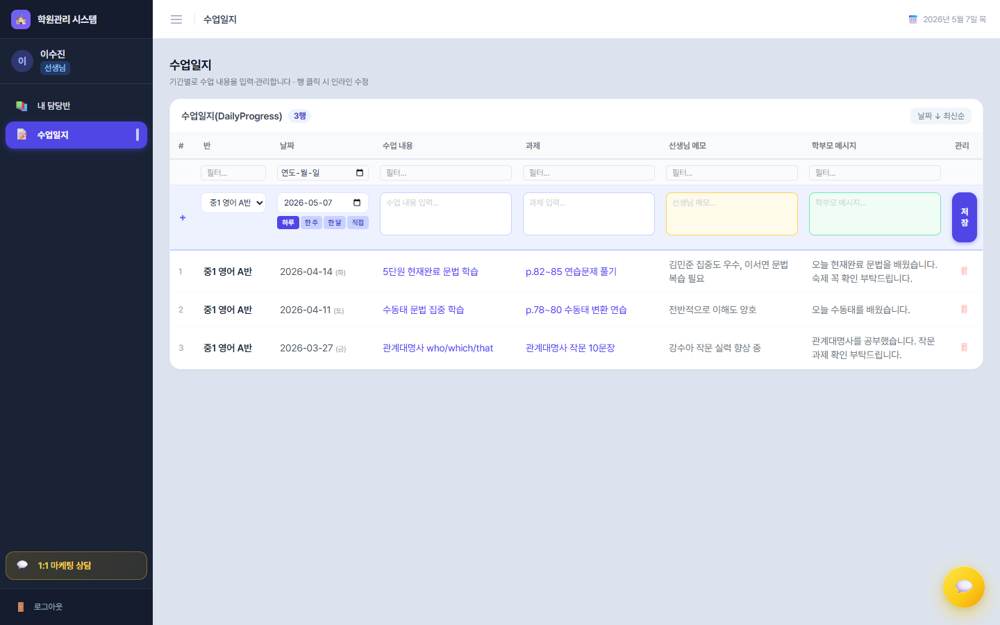

선생님 완전 가이드
선생님 화면은 메뉴 2개로 단순하지만, 반 상세 페이지에 8개의 강력한 탭이 숨어있습니다. 각 탭이 어떤 정보를 보여주고 무엇을 입력받는지 빠짐없이 정리했습니다.
선생님 메뉴 구성
- 내 담당반 📚 → 클릭 시 → 반 상세 페이지(8개 탭)
- 수업일지 📝
1. 내 담당반 📚

탭 없이 그리드 카드 레이아웃. 페이지 제목은 "{선생님이름} 선생님 담당반".
각 카드의 정보 (2~5열 그리드)
- 반 이름 (15px 진한 폰트)
- 과목 배지 (파란 태그)
- 📅 요일 (월~일 색상 구분 정렬)
- ⏰ 시간 (시작~종료)
- 👥 학생 수
- 당일 결석 학생명 (있는 경우만 빨갛게 표시)
카드 색상 팔레트
각 카드 우상단의 원형 색상 버튼 → 18가지 팔레트(연한색 9 + 진한색 9) 중 선택. 선생님 본인이 자기 화면을 컬러 코드로 구분할 수 있도록 배려.
상호작용
카드를 클릭하면 그 반의 상세 페이지로 이동 → 8개 탭이 펼쳐집니다.
반 상세 페이지 — 8개 탭의 모든 것
제목 영역에 {반명} · 요일 · 시간 · {학생수}명, 우측에 날짜 선택 입력(type="date")이 있습니다. 이 날짜가 모든 탭의 기준일이 됩니다.
📑 탭 1 — ✅ 출석체크
일일 출석 상황을 처리하는 메인 작업 공간. 좌·우 2단 구성.
① 전체 공지 (상단)
- 텍스트 입력 + 등록 버튼
- 저장된 공지 목록은 인라인으로 수정/삭제
② 출석 체크 (좌측 1열)
학생별 4가지 상태 토글 버튼:
- ✅ 출석 (녹색) — 즉시 적용
- ❌ 결석 (빨강) — 즉시 적용
- ⏰ 지각 (노랑) — 모달 확인 후 적용
- 🚪 조퇴 (주황) — 모달 확인 후 적용
③ 출결 상태별 알림 메시지 (우측 2열, 접이식)
- 변수 안내:
{이름},{날짜},{반명},{연락처} - 출석/결석/지각/조퇴별 메시지 템플릿 textarea
- 학부모 알림 발송용 웹훅 URL 설정
④ 이달 출석 현황 (우측)
- 서브탭: 캘린더 ↔ 그래프 토글
- 학생 필터(전체 / 개별)
- 범례: 출석(녹) / 결석(빨강) / 지각(노랑) / 조퇴(주황)
- 캘린더 뷰 — 수업일에 학생명을 3열 그리드로 배치
- 그래프 뷰 — 누적 막대 차트(날짜별 인원)
⑤ 액션 버튼
🔵 출석 저장 / 🟢 학부모 알림 발송
📑 탭 2 — 📖 진도/과제
가장 단순한 탭. 선택 날짜에 대해 3개 textarea.
- 오늘의 진도 내용 — 학습 내용 (3줄)
- 이번 주 과제 — 다음 시간까지 할 것 (2줄)
- 학부모 전달 메시지(공통) — 학부모 화면에 노출되는 메시지 (2줄)
- 저장 버튼 (인디고 전폭)
📑 탭 3 — 📝 학생관찰
학생 한 명 한 명에 대한 메모. 2종 분리가 핵심.
① 학생별 메모 입력 (선택 날짜)
| 색 | 구분 | 대상 |
|---|---|---|
| 🔒 | 원장 열람용 관찰 | 학원장만 봄. 학부모에게는 절대 노출 안 됨 |
| 📱 | 학부모 전달 내용 | 학부모 화면에 즉시 노출 |
학생별로 두 textarea가 나란히 → 전체 저장 버튼.
② 이전 관찰 기록
기간 프리셋(전체/1주/1개월/3개월) + 커스텀 범위. 날짜별 그룹으로 학생별 두 색상 메모를 시간순 표시.
📑 탭 4 — 📋 과제수행
숙제 평가 + 통계 추이. 3섹션.
① 결과 입력 (선택 날짜)
학생별 4단계 평가 + 평가 메모. 점수 환산이 자동:
| 평가 | 색 | 점수 |
|---|---|---|
| 우수 | 파랑 | 100점 |
| 보통 | 초록 | 70점 |
| 미흡 | 주황 | 35점 |
| 미제출 | 회색 | 0점 |
② 이전 기록
1주/1개월/3개월 프리셋 + 커스텀. 날짜별 그룹, 학생별 결과 pill.
③ 과제 수행도 추이
- 서브탭: 캘린더 ↔ 그래프
- 캘린더 — 날짜 셀에 학생 결과 색상 그리드
- 그래프 — 학생별 토글 + 꺾은선(0/35/70/100) + 반평균 점선
📑 탭 5 — 🎯 데일리테스트
매 수업 작은 시험 점수 관리.
① 점수 입력
- 만점 설정 (number)
- 학생별 점수 입력
- 반 평균 자동 계산: "반 평균 X.X점 / 만점 (입력 N명)" 파란 박스로 실시간 표시
② 이전 기록
- 뷰 토글: 목록 ↔ 그래프
- 목록 — 날짜별 그룹: 반평균 / 학년평균 / 학교평균 + 학생별 pill (80%↑ 파랑·60~80% 초록·<60% 빨강)
- 그래프 — 학생 선택 시 평균/최고/최저/응시 4카드 + 꺾은선 + 반평균 점선
📑 탭 6 — 📊 주간/월간시험
가장 복잡한 탭. 분야별 점수 입력이 가능합니다.
① 시험 등록
- 시험명 (text)
- 시험 유형: 주간 / 월간
- 분야 설정: 텍스트 입력 → Enter / + 추가. 드래그로 순서 변경, 더블클릭 수정, 8가지 색상 자동 할당, 전체삭제 버튼
② 점수 입력
분야가 없으면 단일 점수, 있으면 분야별 테이블(행=학생, 열=분야 + 합계 자동 계산).
③ 이전 시험 기록
목록(헤더 클릭 → 인라인 편집: 시험명/유형/만점/점수) ↔ 그래프(시험별 추이 + 반평균 점선).
④ 우상단 버튼
📜 성적표 생성 → 탭 7로 전환.
📑 탭 7 — 📜 성적표
학생별 종합 성적 카드 페이지. 학부모에게 발송하는 핵심 자료.
상단 컨트롤
- 전체 선택 체크박스 (선택 인원 카운트)
- 기준 월 입력 (
type="month") - 웹훅 URL 입력
- 성적표 발송 버튼 (초록)
학생별 성적표 카드 5블록
- 📝 데일리 테스트 추이 — 꺾은선(반평균 점선) + 점수 칩 목록
- 📊 주간 테스트 — 바차트 + 분야별 점수 테이블 + 영역별 레이더
- 🏆 월간 평가 (3개월 추이) — 꺾은선(주황 굵음) + 영역별 추이 + 분야별 테이블 (전월 대비 ↑↓ 화살표)
- 출석 & 과제 현황 — 도넛 2개 + 미니 캘린더 + 범례
- ✍️ 선생님 총평 — 학생별 textarea
📑 탭 8 — 📈 현황그래프
반 전체 시각화 대시보드. 3개의 거대한 차트.
- 학생별 종합 역량 (방사형) — 시험(T) / 과제(HW) / 출석률(Att) 3축. 학생당 1개 레이더가 그리드로 펼쳐짐
- 과제 수행 전체 분포 (도넛) — 우수·보통·미흡·미제출 비율
- 데일리테스트 성적 추이 (꺾은선) — 학생별 토글 + 반평균 점선 + 50~100% 흐린 강조 구간
각 차트는 기간 프리셋(1달/3달, 선택월) + 커스텀 범위로 독립 필터.
2. 수업일지 📝

제목 "수업일지" + 부제 "기간별로 수업 내용을 입력·관리합니다 · 행 클릭 시 인라인 수정". 탭 없이 거대한 테이블 한 장.
섹션 ① — 상단 메타 + 정렬
- "수업일지(DailyProgress)" 제목 + 행 수 배지
- 필터 초기화 (필터 활성 시)
- 날짜 정렬 토글: 최신순(↓) ↔ 오래된순(↑)
섹션 ② — 테이블 헤더 + 컬럼 필터
8열: # · 반 · 날짜 · 수업 내용 · 과제 · 선생님 메모 · 학부모 메시지 · 관리. 헤더 바로 아래에 컬럼별 검색/날짜 필터.
섹션 ③ — 인라인 추가 행 (연한 보라 배경)
"+ 새 수업일지 추가" 행. 핵심은 기간 프리셋:
- 🔵 하루 — 단일 날짜
- 🔵 한 주 — 월~일
- 🔵 한 달 — 1일~말일
- 🔵 직접 — 시작/종료 날짜 직접 입력
한 주 이상 선택 시 수업일 미리보기가 초록 배지로 표시("✓ N수업일") + 일자 칩 4개 + "+Nday" 축약. → 한 번 입력으로 그 기간의 모든 수업일에 자동 복제.
섹션 ④ — 입력 4종 textarea (색상 분리)
| 필드 | 색 | 학부모 노출 |
|---|---|---|
| 수업 내용 | 흰 배경 / 인디고 보더 | O |
| 과제 | 흰 배경 / 인디고 보더 | O |
| 선생님 메모 | 노랑 배경 (#FFFBEB) | X — 내부용 |
| 학부모 메시지 | 초록 배경 (#F0FDF4) | O |
섹션 ⑤ — 데이터 행 / 편집 행
행 클릭 → 편집 모드(좌측 3px 인디고 테두리 + ✎ 마커). 모든 textarea 즉시 수정 → 저장/취소.
매일 / 매주 루틴
매 수업 직후 (5분)
- 탭 1 출석체크
- 탭 2 진도/과제
- 탭 5 데일리테스트 점수
매일 퇴근 전 (10분)
- 탭 3 학생관찰 — 인상적인 학생 1~2명
- 탭 4 과제수행 — 결과 입력
매주 금요일 (15분)
- 탭 8 현황그래프 — 반 전체 점검
- 탭 6 주간시험 점수
- 출결률 80% 미만 학생 메모
월말 1회 — 성적표 발송
탭 6 → "📜 성적표 생성" → 탭 7에서 전체 학생 선택 → 웹훅 URL 입력 → "성적표 발송". 데일리/주간/월간 + 분야별 + 출석/과제 + 총평이 한 번에 나갑니다.